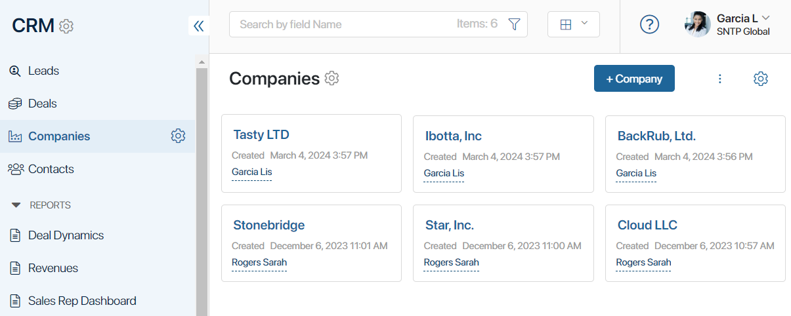

An app is a BRIX component intended for creating and storing app items and business processes. For example, the Contacts app stores data about legal entities, their addresses, phone numbers, etc. Each added company will be an item of this app.

You can associate business processes with an app. In this case, data stored in the app will be automatically sent to the tasks assigned to users during the process execution. At each process stage, employees will receive all the information that they need to perform their tasks and make decisions.
начало внимание
An app can only be created within a workspace.
конец внимание
It is convenient to group all apps used to address thematically related tasks in one workspace. For example, apps with data for the marketing department, such as Contacts, Leads, Deals, etc., are added in the CRM workspace.
Built-in apps
BRIX includes default built-in apps located in built-in workspaces that are ready for use. These are:
- In the System apps workspace: My legal entities and External users.
- In the CRM workspace: Leads, Deals, Companies, and Contacts.
If you navigate to a built-in app page, the underscore prefix appears before its name in the address bar, for example, _clients/_contacts.
начало внимание
You cannot export a built-in app as an individual system component, nor is it possible to copy or delete it. Exporting such an app is only possible within a built-in workspace or a solution and it has its own peculiarities and limits.
конец внимание
Actions with apps
In apps, you can:
- Create app items (entries).
- Configure custom forms for item creation, viewing, and editing pages.
- Generate an app item name from a template.
- Configure access to the app and its items.
- Model business processes.
- Add action buttons.
- Configure app item statuses, which can be changed in a business process or manually.
- Change the list and order of apps in a workspace.
- Export and import data.
To learn more about working with apps, read these articles:
Found a typo? Select it and press Ctrl+Enter to send us feedback